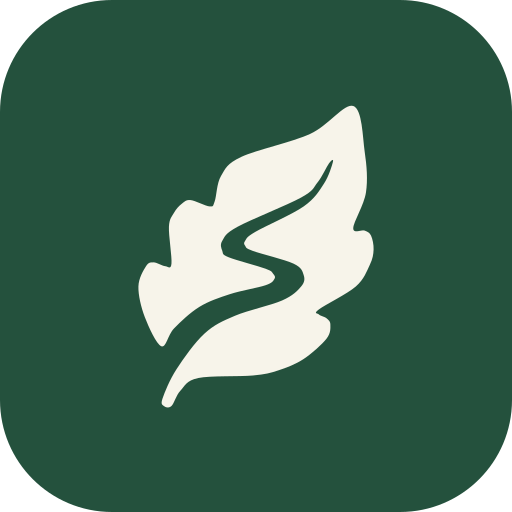
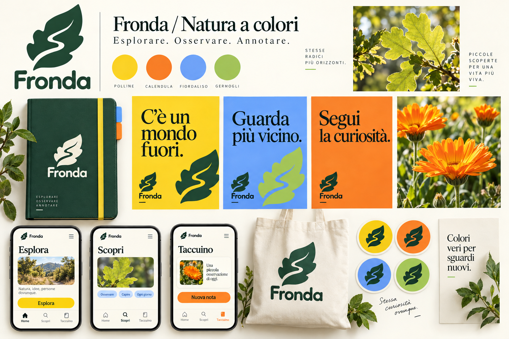
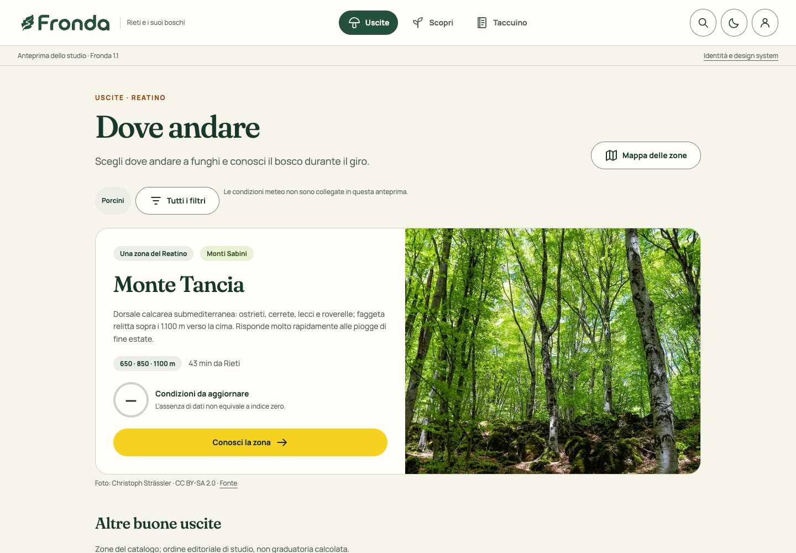
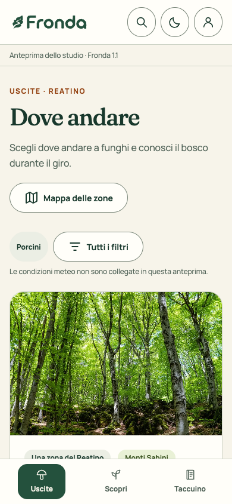
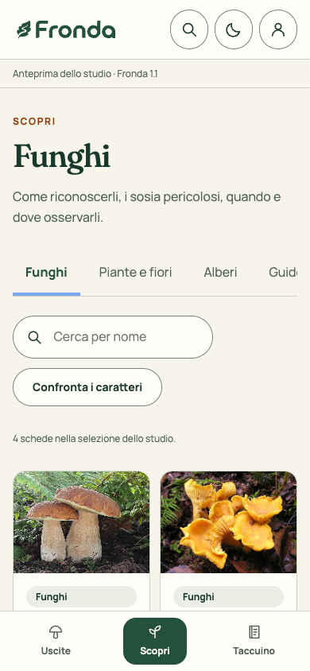
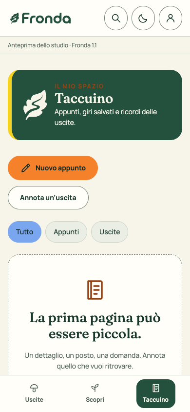

Il centro del prodotto
Promessa funzionale
Scegliere dove e quando andare a funghi intorno a Rieti, leggere condizioni e contesto e annotare ciò che si osserva.
Il marchio scelto tiene insieme la scoperta e il racconto personale. Il richiamo al pennino nasce dalla forma: resta una lettura evocativa, senza aggiungere un altro simbolo.
01 / Esplorare
Il vuoto sinuoso attraversa il segno e accompagna lo sguardo verso la punta.
02 / Osservare
Pochi lobi ampi e morbidi evocano la quercia e il sottobosco. È un segno di marca, non una tavola botanica.
03 / Annotare
La punta e il taglio centrale ricordano una penna: l’uscita diventa una nota nel taccuino.
Invita a guardare e fare domande.
Dà indicazioni chiare, con fonti e contesto.
Lascia spazio alle proprie osservazioni.
Un nome aperto alla natura, con una promessa concreta: aiutare a scegliere un’uscita a funghi e imparare a conoscere il bosco lungo il giro.
Il centro del prodotto
Scegliere dove e quando andare a funghi intorno a Rieti, leggere condizioni e contesto e annotare ciò che si osserva.
Il senso dell’identità
La natura, tra passi e appunti. Il segno foglia / sentiero / pennino unisce il luogo, l’uscita e la memoria personale.
Pubblico e contesto
Persone che fanno uscite nei boschi del Reatino e vogliono orientarsi, conoscere e ricordare. È un pubblico di progetto, non una persona validata da interviste.
Il modo di comportarsi
Fonti visibili, termini comprensibili, stato dei dati, fotografie attribuite, note private e distinzione tra stima e osservazione.
Invita a osservare un dettaglio e a fare un confronto.
Luoghi, nomi e contenuti derivano dal territorio e dalle fonti del progetto.
Non trasforma un indice sperimentale o una somiglianza in certezza.
Esplorare. Osservare. Annotare.
Descrittore d’uso: “Uscite a funghi e scoperte nei boschi del Reatino”. Fronda è il nuovo nome di marca nello studio; cataloghi e compiti mantengono i nomi del progetto.
Il sistema è applicato al progetto zatteogit/fungaroli: fotografia del ramo di produzione, non un catalogo naturalistico inventato.
Provenienza
Commit 44f1420e5bc08474428e1049cc9ce550799e9bf0, ramo claude/brave-tesla-wu0a2b, consultato il 15 ottobre 2026. I contenuti pubblicati via CMS possono differire dal Git.
Copertura dell’anteprima
Il prototipo espone le 15 zone e 12 schede selezionate: quattro funghi, quattro piante e quattro alberi; include le tre guide del repo e una ricerca sul glossario.
Numeri calcolati sui dati e sul selettore del repo: 88 record di taxa fungini, distinti dai 46 elementi del selettore e dai 14 modelli. Fonti, commit, hash dei file e attribuzioni in FONTI-PROGETTO.md e content-source.json.
La gerarchia mantiene il compito originario. Il colore dà vita al prodotto senza spostarlo verso un catalogo generico di escursioni o un identificatore automatico.
01 / Preparare
“Dove andare”, filtri essenziali, giorno, zona e fascia di quota. Mappa e dettaglio della zona sostengono la scelta.
02 / Osservare
Funghi, Piante e fiori, Alberi, guide e glossario. Entrata diretta ai cataloghi; confronto dei caratteri e fonti.
03 / Ricordare
Appunti, schede collegate, giri e uscite. Ricerca e filtri nell’indice; privacy e condivisione sono scelte esplicite.
Una scheda completa ha un indirizzo e un ritorno prevedibile. La lente apre la foto. La card e il nome sono veri collegamenti.
Dalla mappa, dal confronto o dal giro, il dettaglio contestuale conserva la posizione e dà accesso esplicito alla scheda completa.
Il handoff prescrive Uscite, Scopri e Taccuino e colloca guide/glossario in Scopri; la shell del commit contiene ancora accessi Mappa e Impara. Lo studio segue il handoff: mappa come vista delle uscite, guide dentro Scopri. È una proposta d’integrazione da verificare prima di cambiare l’app.
Fonti: AGENTS.md, docs/handoff-2026-10-14.md e docs/ux-navigazione.md del commit citato.
Un unico master vettoriale per tutte le applicazioni. Il logotipo conserva il disegno della proposta scelta: non va ricomposto digitando il nome con un carattere simile.
Orizzontale · intestazioni, documenti, navigazione
Verticale · copertine, comunicazione, tessuti
Simbolo · avatar e firma

Icona · fondo pieno
Sotto 24 px usare una sigla testuale o un indicatore dell’interfaccia, senza comprimere il marchio.
La forza del simbolo sta nel rapporto tra pieno e vuoto. Mantieni il sentiero aperto e il contorno originale.
Lascia almeno x su tutti i lati. x è un quarto della larghezza del simbolo nel formato usato. Per il solo logotipo, x è metà dell’altezza della F.
Simbolo: 24 px / 8 mm.
Marchio orizzontale: 120 px / 32 mm.
Marchio verticale: 96 px / 25 mm.
Verde su avorio; avorio su verde; nero su chiaro per usi monocromatici. Sulle foto, usa una zona uniforme o un pannello pieno.
Per ricamo, timbro o stampa piccola, fare una prova fisica: il vuoto del sentiero deve rimanere aperto.
Un verde bosco più luminoso, molto avorio e quattro accenti accesi ma naturali. Una palette comune, con un ruolo per ogni colore.
Firma e struttura, con un verde più aperto.
Luce e spazio per tutti i contenuti.
Azioni principali e punti d’attenzione.
Storie, inviti e accenti caldi.
Contrasti freschi e superfici editoriali.
Superfici leggere e dettagli botanici.
Bosco e avorio fanno da base. Per composizione, un accento dominante e gli altri a supporto; nell’insieme convivono tutti. Il verde profondo resta disponibile per testi e dettagli.
| Testo / fondo | Rapporto |
|---|
Testi scuri sui colori accesi. Per testo piccolo sui fondi chiari, usare le varianti “ink”, più scure.
I colori espressivi restano distinti dai ruoli di conferma, attenzione ed errore.
Un colore di marca non indica commestibilità o identificazione verificata. I messaggi critici richiedono testo e simbolo.
I valori esatti sono nei token sRGB. I colori dei mockup generati sono indicativi. Per la stampa, convertire con il profilo della tipografia e verificare una prova.
Due famiglie, due compiti. Il logotipo è un disegno separato, fornito in tracciati.
Interfaccia / Manrope
Ogni dettaglio
conta.
Aa Bb Cc Dd Ee Ff
0123456789 · à è ì ò ù
400 per lettura · 500 per etichette · 700 per titoli e pulsanti. Cifre allineate per dati e misure.
Editoriale / Fraunces
Ogni uscita,
una scoperta.
Aa Bb Cc Dd Ee Ff
0123456789 · à è ì ò ù
500 per titoli narrativi e citazioni. Usare con misura; evitare nei controlli e nei dati densi.
Font inclusi con le rispettive licenze SIL Open Font License, prelevati dal repository Google Fonts. Nessuna connessione esterna necessaria per leggere la guida. Corpo minimo nei campi: 16 px.
Fronda parla in modo diretto, curioso e misurato. Accompagna l’osservazione; distingue ciò che sappiamo da ciò che resta da verificare.
Payoff ufficiale · 20/10/2026
Chi cerca,
si ritrova.
Forma canonica: “Chi cerca, si ritrova.” Maiuscola iniziale, virgola e punto finale.
Significato
Scoprire fuori.
Ritrovarsi dentro.
Cercare nel bosco e ritrovare tempo per sé. Un invito alla curiosità, senza promettere ritrovamenti.
Uso con il marchio
Fronda
Chi cerca, si ritrova.
Payoff in Manrope, subordinato al logotipo e fuori dalla sua area di rispetto. Ometterlo se non è leggibile.
Riprese a livello del terreno, luce diffusa, colori credibili. Alternare ambiente e dettagli: corteccia, foglie, funghi nel loro habitat.
Nelle schede usare immagini documentate e coerenti con la specie; indicare autore e fonte. Evitare filtri che alterano i caratteri visivi.
Vicino alla terra.
Attento ai dettagli.
| Contesto | Testo consigliato | Da evitare |
|---|---|---|
| Taccuino vuoto | La prima scoperta può essere piccola. Aggiungi una nota. | Un messaggio tecnico senza invito all’azione. |
| Errore di salvataggio | La nota non è stata salvata. Riprova. | “Ops!” senza spiegazione o soluzione. |
| Indice o previsione | Condizioni stimate · aggiornato alle… | Promesse di ritrovamenti garantiti. |
Il sentiero guida la composizione. Il simbolo resta la firma; le icone aiutano a orientarsi.
Griglia 24 × 24 · tratto 1,8 · terminali arrotondati. Icone da 20 o 24 px nei controlli; area interattiva minima 44 × 44 px. Etichetta visibile per le destinazioni principali.
Trama per risguardi e superfici ampie. Non usarla sotto testi lunghi o contenuti diagnostici. Il marchio non diventa una texture nelle schermate operative.
Un gesto fluido può separare contenuti editoriali. Nelle liste, usare righe semplici.
Spazio ampio attorno ai titoli. Contenuti vicini quando appartengono alla stessa azione.
Rame su un dettaglio per composizione. Evitare fogliame decorativo in ogni angolo.
Applicazioni costruite con lo stesso master e tutti gli accenti naturali. Ogni supporto sceglie un colore dominante, mantenendo bosco e avorio come firma.
Appunti dal bosco
Ogni uscita,
una scoperta.
Uno spazio per osservare, raccogliere appunti e tornare sui propri passi.
Template SVG modificabili. Formati nominali senza abbondanze; aggiungere margini e impostazioni richiesti dallo stampatore. Per tessuti, preferire la versione monocromatica.
Editoria outdoor, cultura botanica e vita all’aperto. Tre riferimenti trasversali per capire fotografia, tipografia, ritmo e materiali.
Extract Studio
Fotografia immersiva, testata editoriale, margini e colori d’accento.
Per Fronda: Portare nel racconto di Fronda la calma del magazine; lasciare le schermate operative più asciutte.
Pentagram
Dialogo tra serif e sans, immagini botaniche protagoniste, composizioni forti.
Per Fronda: Dare precisione alle schede e personalità ai titoli, con una gerarchia netta.
Edna
Fotografia d’uso, tipografia decisa e linguaggio outdoor diretto.
Per Fronda: Usare energia nelle campagne e negli inviti a uscire, mantenendo il tono accogliente.
Riferimenti reali tratti dai portfolio degli autori, consultati il 15 ottobre 2026. Non sono tutti progetti recenti: servono a confrontare linguaggi visivi durevoli. Le immagini sono riferimenti di ricerca, distinti dagli asset originali di Fronda.
Taccuino editoriale, dettaglio botanico e fotografia sul campo convivono con una palette naturale plurale. Il marchio C rimane il punto fermo.

Tavola d’atmosfera generata con imagegen. La palette adottata è precisata nei token e negli esempi nativi della guida. I precedenti studi restano nel kit come tappe della ricerca.
Quattro accenti convivono nel sistema. La gerarchia, il marchio e la tipografia restano gli stessi: il colore accompagna il contesto.
Polline
Un invito chiaro a cominciare.
Calendula
Un accento caldo per storie e appunti.
Fiordaliso
Un dettaglio fresco per guardare meglio.
Germoglio
Uno sfondo leggero per dettagli botanici.
Ogni schermata o materiale ha un accento principale. Piccoli richiami agli altri possono creare continuità.
Bosco e avorio mantengono la riconoscibilità. Il verde profondo resta per testi e dettagli; i fondi principali acquistano luce.
Usare il colore per ritmo e gerarchia. Stato di una nota e avvisi devono avere sempre parole e simboli, oltre al colore.
Sui campi polline, calendula, fiordaliso e germoglio usare l’inchiostro scuro del sistema. Sui fondi avorio, usare le varianti scure per etichette e collegamenti. La forma della foglia rimane C, con pochi lobi ampi.
I componenti generali diventano pattern del prodotto. La copertura distingue ciò che si può provare da ciò che richiede l’integrazione con i servizi.
| Pattern | Contratto d’uso | Copertura |
|---|---|---|
| Testata e navigazione | Tre destinazioni, vista attiva, ricerca e profilo. | Nativo nel prototipo |
| Filtri di uscita | Specie, giorno, comodità e vicinanza; ordine distinto dall’indice. | Specifica + pannello di studio |
| Scheda zona | Titolo, immagine, quote, accesso, condizioni e sentieri. | Nativo nel prototipo |
| Indice ambientale | Numero con virgola, scala 0–10, dati mancanti e data di acquisizione. | Specifica + stato senza dati |
| Catalogo | Ricerca, scheda fotografica, nomi comune/latino, attribuzioni. | Nativo nel prototipo |
| Confronto e rischio | Caratteri, sosia, messaggi persistenti; nessun verdetto sull’esemplare. | Pannello dimostrativo parziale |
| Pannello contestuale | Contenuto condiviso con la pagina; chiusura e ritorno del focus. | Nativo nel prototipo |
| Taccuino | Indice, filtri, appunto, osservazione, cancellazione ed esportazione. | Nativo locale nel prototipo |
| Profilo e base | Passkey e privacy dell’account, base facoltativa. | Specifica; nessun accesso reale |
La scheda completa e il pannello contestuale usano gli stessi dati, senza riduzioni che eliminino i rischi.
Default, selezionato, focus, caricamento, vuoto, errore e recupero sono parte del pattern.
Salva, elimina, esporta e condividi richiedono esiti comprensibili; un errore non deve sembrare un successo.
L’indice sperimentale descrive condizioni di crescita. Le osservazioni sono dichiarazioni: né il numero né il colore possono diventare una certificazione.
Esempio tipografico
Valore inventato solo per mostrare la scala. Non è una previsione, non equivale al 72% e non promette ritrovamenti.
Dati mancanti
Il dato mancante non è zero. Mantieni i contenuti statici della zona, spiega il limite e offri di riprovare.
Copia precedente
Conserva il dato precedente quando è ancora utilizzabile e mostra la sua acquisizione originale. Non chiamarlo “ora”.
| Dato / stato | Regola visiva e testuale |
|---|---|
| Indice disponibile | Numero, scala, contesto zona/quota/specie/giorno e dettaglio facoltativo dei fattori. |
| Modello assente | La specie resta consultabile e annotabile; nessun indice derivato dal colore o inventato. |
| Zero osservazioni | Distinto da servizio indisponibile. Un conteggio richiede sempre finestra temporale e origine. |
| Quantità | Pochi / Discreti / Tanti sono ordinali. “Cercata, non trovata” è uno zero esplicito; dato non annotato resta assente. |
| Caratteri e rischio | Icona più testo, avvisi leggibili e specie pericolose consultabili. La palette di marca non codifica commestibilità. |
Il prototipo non chiama meteo, calcolo o API della comunità. Visualizza “—” invece di una stima fittizia. Requisiti dal modello e dalla guida d’uso del progetto.
Il pennino nel marchio trova qui il suo significato: pagine da conservare, con riferimenti e contesto, senza confondere nota privata e segnalazione condivisa.
Un titolo, un testo e il riferimento a una scheda o una guida. Una fotografia della scheda è un riferimento, non uno scatto personale.
Zona, giorno, fascia di quota, specie cercate, ritrovamenti e nota. Lo zero richiede una ricerca esplicita e resta distinto dal dato mancante.
Nel prodotto, dispositivo e profilo con passkey sono distinti. La condivisione riguarda osservazioni abilitate, mai le note private in automatico.
Azioni comprensibili, conferma prima di eliminare e possibilità di annullare. Errori e salvataggi parziali vanno dichiarati.
Appunti e uscite si possono creare, filtrare, eliminare ed esportare. Sono salvati in uno spazio locale separato, con la dicitura “Solo su questo browser”. Nessun profilo, passkey, dato meteo o segnalazione collettiva viene creato o inviato.
Una base riutilizzabile: token primitivi, ruoli semantici e token di componente. I componenti consumano ruoli, così il tema cambia senza ridisegnare ogni elemento.
4–8 dentro un gruppo · 12–16 tra testo e controllo · 24 dentro le schede · 32–48 tra gruppi · 64–96 tra sezioni editoriali.
Mobile: 4 colonne, margine 20 px.
Tablet da 720 px: 8 colonne, margine 32 px.
Desktop da 1024 px: 12 colonne, max 1160 px.
Gutter: 16 px mobile, 24 px desktop.
Altezze adattabili al testo. Nessun contenuto essenziale solo al passaggio del mouse.
primitive.forestsemantic.brandcomponent.button-bgFonte: tokens.json · CSS generato: styles/tokens.css. Tema chiaro e scuro, stati semantici, focus e movimento ridotto. La verifica automatica controlla riferimenti, cicli, colori fuori dai token e contrasti dichiarati.
Quattro stati proposti per l’app. “Bozza” riguarda il contenuto; “Da sincronizzare” riguarda la trasmissione: possono coesistere. Non sono funzioni attive di questa guida.
Obiettivo minimo 44 × 44 px. Campi e pulsanti principali alti almeno 48 px.
140 ms per risposte rapide, 220 ms per transizioni. Rispetta la preferenza di movimento ridotto.
Focus visibile, etichette associate, errori testuali e navigazione da tastiera.
Esempi funzionanti: le azioni principali sono chiare, le alternative restano visibili e i controlli mantengono le semantiche native.
Primario per l’azione principale, secondario per l’alternativa, testuale per azioni leggere. Un solo primario dominante per gruppo.
Mostra tutte le osservazioni.
Il chip seleziona; il badge descrive. Non rendere interattivo un badge informativo.
Margine lobato, pagina inferiore chiara. Da confrontare con la scheda.
Contenuto dimostrativo. Titolo descrittivo, metadati separati e stato espresso a parole.
Anche gli stati vuoti, gli errori e le conferme fanno parte dell’identità. Il colore aiuta, il testo spiega.
Informazione · Puoi aggiungere un luogo anche più tardi.
Conferma · La nota è stata salvata.
Attenzione · Mancano alcuni dati da verificare.
Errore · La nota non è stata salvata. Riprova.
Esempi di messaggi, non stato di un salvataggio reale.
Una nota racconta ciò che hai visto. Aggiungi foto e dettagli quando ti sono utili.
Data, ambiente e luogo sono metadati separati. La posizione precisa può restare privata.
Preferenza di esempio: luogo privato.
Un luogo, una forma, una curiosità. Scrivi ciò che osservi e distinguilo dalle ipotesi.
Il controllo nella barra della guida cambia i ruoli cromatici di questi componenti. La preferenza resta solo nel browser.
Aggiungi una prima osservazione.
Il dialogo gestisce il focus, si chiude con Esc e restituisce il focus al controllo d’origine.
Nomi, quote e fotografie provengono dal repository. Uscite prepara la scelta; Scopri mette a confronto i caratteri; Taccuino conserva la memoria personale.
Uscite · Reatino
Christoph Strässler · CC BY-SA 2.0 · Fonte
Monti Sabini · 650 / 850 / 1100 m
43 min da Rieti · dato del catalogo
— Condizioni da aggiornare
Scopri · Funghi
Holger Krisp · CC BY 3.0 · Fonte
Boletus edulis
Tubuli e pori · gambo robusto
Scheda di riferimento, non identificazione dell’esemplare.
Il mio spazio
Un dettaglio, un luogo, una domanda da ritrovare.
Nell’anteprima, le pagine restano nel solo browser.
Valori stradali statici del catalogo, senza traffico. Nessuna previsione meteo inventata. Le fotografie non ritraggono osservazioni dell’utente. Apri il prototipo navigabile.
Il prototipo permette di passare dall’uscita alla zona, dal catalogo alla scheda e dalla scheda a un appunto, usando la stessa identità.

Il prototipo è autonomo e non sostituisce il codice dell’app pubblicata. Contenuti dal commit 44f1420; fotografie reali, con autore e licenza.
Navigazione a portata di pollice, testo leggibile, immagini documentate e comandi espliciti. Il dettaglio cresce senza perdere la posizione nel compito.



Schermate effettive del prototipo a 390 px. Il testo resta testo e le icone restano vettoriali nell’interfaccia; questi screenshot sono solo illustrazioni nella guida.
Lo studio rende concreta la direzione. L’integrazione richiede una migrazione controllata nel repository, preservando i contratti scientifici, i contenuti e i dati personali.
01 / Base
Portare token, font, marchio e icone in un unico livello. Legare i componenti ai ruoli e verificare i due temi, senza colori duplicati.
02 / Esperienza
Applicare i pattern a Uscite, zona, Scopri, pannelli e Taccuino. Confermare la riconciliazione della navigazione prima di cambiare le destinazioni.
03 / Rilascio
Provare stati meteo, dati mancanti, privacy/account, confronto dei rischi, uso da tastiera e rete instabile. Il prototipo locale non prova i servizi.
| Da preservare | Criterio di accettazione |
|---|---|
| Identità | Master C identico; palette plurale con un accento dominante; testi leggibili nei due temi. |
| Contenuti | Nomi e link reali; autore/licenza per ogni immagine; snapshot CMS distinto dai JSON del repo. |
| Modello | Indice sperimentale, decimale italiano, dati assenti distinti da zero, botanica subordinata al giro. |
| Contesto | Pagina quando si esplora, pannello durante un compito, lente per la foto, ritorno e focus conservati. |
| Taccuino | Note private, condivisione esplicita, isolamento account, esiti e recupero comprensibili. |
Le modifiche di questo lavoro restano nel kit locale. Nessun commit, PR, migrazione, modifica CMS o deploy è stato effettuato sul progetto Fungaroli.
Studio di brand identity, design system e prototipo navigabile basato sul repository Fungaroli. Direzione C / Lobata, palette naturale plurale, revisione 1.1.
Master vettoriali, varianti monocromatiche, icone, template, font con licenza, token chiari e scuri, componenti e schermate di riferimento.
Integrare i token e i componenti per gruppi di schermate, verificando accessibilità e contenuti reali. L’app pubblicata conserva il suo stato attuale.
Marchio derivato dalla direzione C approvata in questa chat. Logotipo e simbolo sono tracciati vettoriali del concept scelto. Le applicazioni SVG usano questi stessi master.
Font: Manrope · Google Fonts e Fraunces · Google Fonts, con licenze incluse. I nomi non sono stati sottoposti a verifica di disponibilità o registrabilità.
Le tavole generate con imagegen illustrano l’atmosfera. Per produzione fanno fede gli SVG, i token e questa guida. Le specifiche di stampa richiedono una prova sul supporto effettivo.
CTA verdi in light, bianche in dark. Selezioni gialle nei due temi; forme e bordi precedenti, come richiesto nella revisione successiva. Giallo, ciclamino e corallo sono gli accenti editoriali.
Annota è il comando globale di creazione. Confronta e Impara a riconoscere sono due strumenti equivalenti nell’indice. Gli accenti editoriali non sostituiscono i colori delle azioni.

_Boletus_edulis.jpg){kind=link}